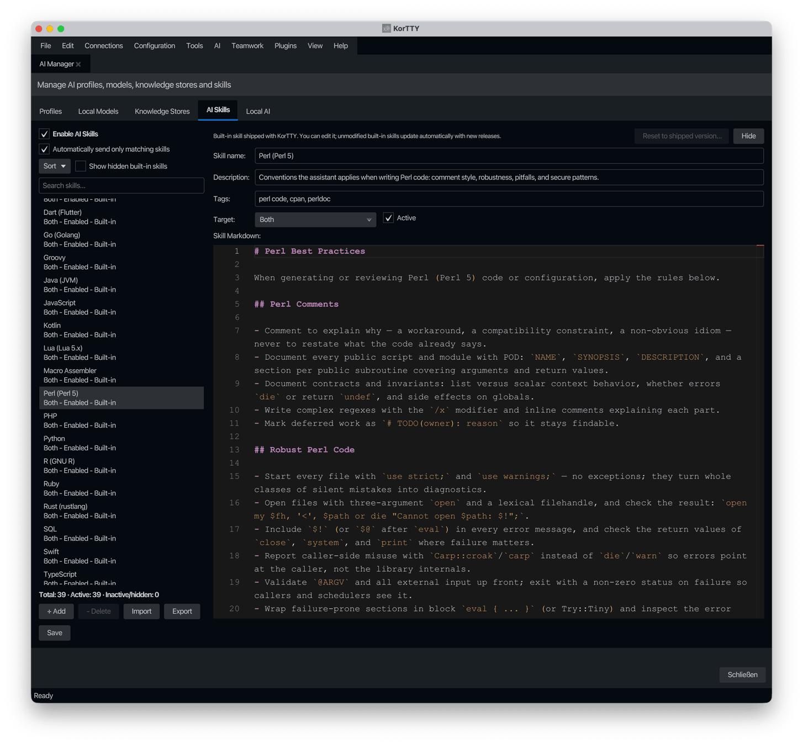

KI-Fähigkeiten¶
Configure custom AI skills that enhance AI interactions. This tab lets you manage a library of markdown-based skills that are automatically or manually included in AI requests. Open via AI → KI-Manager → AI Skills; stored in ~/.kortty/global-settings.xml.
Aus den globalen Einstellungen entfernt
Die Skill-Bibliothek war früher eine Registerkarte unter Konfiguration → Globale Einstellungen. Es befindet sich jetzt im KI-Manager, neben Profilen, lokalen Modellen und Wissensspeichern. Die gespeicherten Daten und die Einstellungsdatei bleiben unverändert.

Globale Einstellungen¶
| Einstellung | Geben Sie | ein Werte | Standard | Gespeichert als |
|---|---|---|---|---|
| KI-Fähigkeiten aktivieren | umschalten | – | Ein | aiSkillsEnabled |
| Automatisch nur passende Fähigkeiten senden | umschalten | – | Ein | aiSkillAutoDetectionEnabled |
| Versteckte integrierte Fähigkeiten anzeigen | umschalten | – | Aus | – (Filter anzeigen) |
| Suchfähigkeiten | Text | Filtert die Liste nach Name, Beschreibung oder Tags | – | – (Filter anzeigen) |
| Sortieren | Menüschaltfläche | Alphabetisch, Status (zuerst aktiviert) | – | – |
| Schaltfläche „Speichern“ | Schreibt die Bibliothek in die globale Einstellungsdatei | – | – |
Eine Zählzeile unterhalb der Liste fasst die gesamte Bibliothek zusammen – Gesamt, Aktiv (aktiviert und nicht ausgeblendet) und Inaktiv/ausgeblendet – unabhängig von der aktuellen Suche oder dem ausgeblendeten Filter.
Felder des Skill-Editors¶
Wenn Sie eine Fertigkeit auswählen oder erstellen, werden im rechten Bereich Felder pro Fertigkeit angezeigt. Jede Fertigkeit wird einzeln in der Fertigkeitsliste gespeichert.
| Einstellung | Geben Sie | ein Werte | Standard | Gespeichert als |
|---|---|---|---|---|
| Skill name | text | — | "AI Skill" | name (on AiSkill object) |
| Beschreibung | Text | – | – | description |
| Tags | Text | Durch Kommas getrennte Tags (z. B. Linux, Bash) | – | tags |
| Ziel | Dropdown | KI-Chat/-Funktionen, KI-Agent, Beide, Verbindung | Beide | target |
| Aktiv | umschalten | — | Ein | enabled |
| Skill-Markdown | Text | Markdown-formatierter Skill-Inhalt | – | content |
Eingebaute Fähigkeiten¶
korTTY bietet 39 integrierte Best-Practice-Kenntnisse für Shells (Bash, KornShell, Zsh, Csh, POSIX sh, PowerShell), Programmiersprachen (Python, C, C++, Java, C#, JavaScript, Visual Basic, SQL, R, Rust, Go, PHP, Swift, Assembly, Macro Assembler, Ruby, Perl, Lua, Groovy, TypeScript, Kotlin, Dart), Markup und Datenformate (HTML, XML, YAML, JSON) und Automatisierungs-/Beobachtbarkeitstools (Puppet, Ansible, Azure DevOps Pipelines, Jenkins Declarative and Scripted Pipelines, Filebeat, Logstash). Jeder Skill bietet professionelle Anleitungen zu Codekommentaren, Robustheit, häufig zu vermeidenden Fallstricken und sprachspezifischen Sicherheitspraktiken. Sie werden beim ersten Start zur Bibliothek hinzugefügt und erscheinen mit einem integrierten Abzeichen.
Integrierte Fertigkeiten verhalten sich wie Ihre eigenen Fertigkeiten – sie können bearbeitet, deaktiviert und Verbindungen zugewiesen werden – mit folgenden Unterschieden:
- Sie können nicht gelöscht, sondern nur ausgeblendet werden. Ausblenden entfernt eine integrierte Funktion aus der Liste und aus allen Fertigkeitsauswahlen, und eine ausgeblendete integrierte Funktion wird nicht mehr mit AI-Anfragen gesendet – selbst bei Verbindungen, denen sie zuvor zugewiesen wurde. Versteckte integrierte Fertigkeiten anzeigen zeigt versteckte Einträge an, die mit einem Versteckt-Abzeichen gekennzeichnet sind, sodass sie mit Einblenden wieder angezeigt werden können.
- Unveränderte integrierte Funktionen werden automatisch aktualisiert. Wenn eine neue korTTY-Version verbesserte Skill-Inhalte bereitstellt, werden unveränderte integrierte Funktionen beim Start automatisch ersetzt (Ihre Auswahl zwischen Aktiv/Ausgeblendet bleibt erhalten).
- Geänderte integrierte Funktionen werden nie berührt. Sobald Sie eine integrierte Funktion bearbeiten, wird für sie das Abzeichen „Integriert (geändert)“ angezeigt und die automatische Aktualisierung wird beendet. Auf die ausgelieferte Version zurücksetzen verwirft Ihre Änderungen und stellt die ausgelieferte Version wieder her, auf der Ihre Änderungen basierten. Wenn eine neuere ausgelieferte Version vorhanden ist, wird im Eintrag 🔄 Update verfügbar angezeigt und Update auf neueste ausgelieferte Version übernimmt diese.
- Ihre eigenen Fertigkeiten haben immer Vorrang. Wenn einer Ihrer aktivierten Fertigkeiten ein Tag trägt, das mit dem Thema einer integrierten Fertigkeit übereinstimmt (z. B. eine persönliche Fertigkeit mit der Bezeichnung
perl), wird die integrierte Fertigkeit unterdrückt: Sie zeigt Von Benutzerfertigkeit überschrieben an, ist ausgegraut und wird nicht mehr mit einer AI-Anfrage gesendet. Durch das Löschen oder Deaktivieren Ihres Skills wird die integrierte Funktion sofort wieder aktiviert. - Deaktivierte, ausgeblendete und überschriebene Einträge werden ausgegraut dargestellt; Dies funktioniert in jedem Anwendungsdesign-Thema.
Durch das Ausschalten der automatischen Erkennung werden integrierte Funktionen deaktiviert
Ohne automatische Erkennung wird jeder aktivierte Skill mit jeder KI-Anfrage gesendet, was bei 35 integrierten Skills die Eingabeaufforderungen massiv übersteigen würde. Wenn Sie Automatisch nur passende Fertigkeiten senden ausschalten, werden Sie daher nach einer Bestätigung gefragt und anschließend alle integrierten Fertigkeiten deaktiviert. Aktivieren Sie diejenigen, die Sie benötigen, einzeln wieder. In späteren Versionen bereitgestellte integrierte Funktionen sind ebenfalls deaktiviert, wenn die automatische Erkennung deaktiviert ist.
Notizen¶
Automatisches Erkennungsverhalten
Wenn Nur übereinstimmende Fertigkeiten automatisch senden aktiviert ist, bewertet korTTY jede Fertigkeit anhand der aktuellen Anfrage in vier Feldern – Tags, Name, Beschreibung und die Überschriften im Markdown der Fertigkeit – und schließt höchstens die zwei Fertigkeiten mit der höchsten Bewertung ein, die den Relevanzschwellenwert erreichen (Gleichstände nach Katalogreihenfolge aufgelöst). Explizit angeheftete und verbindungszugewiesene Fertigkeiten werden zusätzlich hinzugefügt und verbrauchen dieses Limit nicht. Wenn die lokalen Bewertungen nicht schlüssig sind (keine oder eine passende Fähigkeit oder genau zwei übereinstimmende mit nahezu gleichen Bewertungen), bittet korTTY das Modell zusätzlich, die Anfrage zu klassifizieren und bevorzugt diese Antwort – ebenfalls begrenzt auf zwei Fähigkeiten – und greift auf das lokale Ergebnis zurück, wenn der Anruf fehlschlägt. Bei Deaktivierung werden alle anwendbaren Fertigkeiten ohne Bewertung gesendet – eine Fertigkeit wird weiterhin übersprungen, wenn sie inaktiv ist, leeren Inhalt hat oder nicht mit dem aktuellen Ziel übereinstimmt.
Fertigkeitsziele
- KI-Chat/Funktionen: Fähigkeiten, die in KI-Chat- und Funktionsaufrufkontexten verfügbar sind
- KI-Agent: Vom Terminal-KI-Agenten verwendete Fähigkeiten
- Beide: Verfügbar sowohl für AI Chat- als auch für AI Agent-Kontexte
- Verbindung: Spezielle Fähigkeiten für die Handhabung von SSH-Verbindungen
Skill-Lebenszyklus
Fertigkeiten werden als XML-Elemente in der globalen Einstellungsdatei gespeichert. Verwenden Sie Importieren, um Fertigkeiten aus Markdown-Dateien zu laden, und Exportieren, um ausgewählte Fertigkeiten als Markdown-Dateien zu speichern. Löschen gilt nur für Ihre eigenen Fähigkeiten; Stattdessen werden integrierte Fähigkeiten ausgeblendet (siehe oben). Zurücksetzen, Aktualisieren, Ausblenden und Einblenden sind über das Kontextmenü der Liste und über das Banner über dem Editor verfügbar, wenn eine integrierte Fertigkeit ausgewählt wird. Die Fertigkeitsliste kann alphabetisch nach Name oder Status (zuerst aktiviert) sortiert werden. Speichern speichert die Bibliothek sofort und bestätigt neben der Schaltfläche; Ausstehende Änderungen werden auch geschrieben, wenn das KI-Manager-Fenster geschlossen wird. Durch das Importieren einer Markdown-Datei wird immer ein unabhängiger Benutzer-Skill erstellt – sogar eine Datei, die aus einem integrierten Skill exportiert wurde.
Auswahl der Fähigkeiten pro Anfrage
Auf dieser Registerkarte wird die globale Bibliothek verwaltet. Welche dieser aktivierten Fertigkeiten für eine bestimmte Aktion gelten, wird an anderer Stelle ausgewählt: Die KI-Skills-Auswahl des Snippet-Editors heftet Ihre Auswahl an jede Snippet-KI-Aktion, und das Fenster Vollständige Codeanalyse zeigt die enthaltenen Fertigkeiten als Chips an – mit der Bezeichnung (automatisch ausgewählt) oder (manuell) – mit einer durchsuchbaren Auswahl, deren Änderungen bei der nächsten Wiederholung wirksam werden. Innerhalb von Snippet-KI-Aktionen ersetzt der Picker die automatische Erkennung: Es werden nur die angekreuzten Skills plus verbindungszugewiesenen Skills gesendet, und durch das Löschen des Pickers werden überhaupt keine Bibliotheksskills gesendet. Die Snippet-Auswahlaktionen Korrigieren und Übersetzen sowie die feste Anforderung Diagramm umfassen niemals Bibliothekskenntnisse, unabhängig vom Ziel oder der Fixierung. Siehe Snippets → KI-Fähigkeiten.